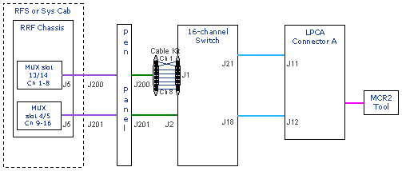
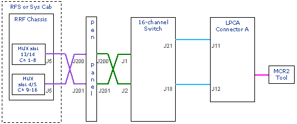
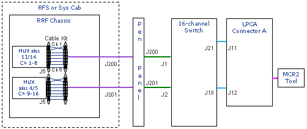
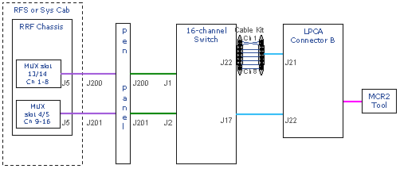
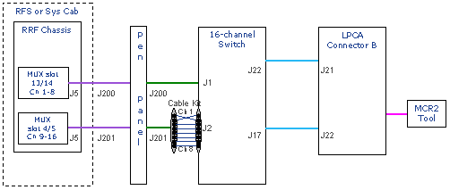
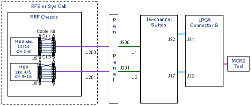
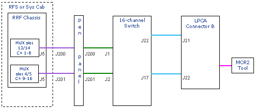

Proprietary to General Electric Company
Direction 5440000, Rev# 5
Signa HDxt Service Methods
Module Version 1.0, Version Date 4/26/07
Proprietary to General Electric Company |
This procedure should be followed after performing the procedures outlined in the MCR 2 Diagnostics.
If there is any failure indicated in the MCR 2 Diagnostic's test results, follow the steps indicated below. If the failure is with a channel in Port A see Section 1, if it is with a channel in Port B see Section 2.
It is recommended that the 16-channel Switch and System Cabinet Loopback diagnostics are run prior to troubleshooting the receive chain with the MCR 2 tool. In most cases, when those other diagnostics have been performed and are passing, the cause of the MCR 2 diagnostic failure should be identified prior to performing Section 1.3 or Section 2.3.
Remove LPCA cover.
Locate Connector A cables on the IF connector on top of LPCA and disconnect both cables from cable track.
Remove Test Cable Assembly from MCR 2 Tool.
Connect both cable track cables directly to MCR 2 tool as shown in Illustration 1.
Run MCR 2 Tool Diagnostics in A mode.
If test passes, repair or replace A connector and then go to Section 1.7.
If test fails, remove the MCR 2 tool and reconnect cables to J11 and J12 on the LPCA's IF panel.
Reconnect MCR 2 tool to the Test cable assembly, and connect MCR 2 tool test cable back to A connector in LPCA. Go to Section 1.2.
Illustration 1: Connecting Cable Track to MCR 2 Tool

Illustration 2:

Disconnect the cable at J21 on the 16-channel Switch.
Locate the RF cable kit and swap the failing channel with a neighboring channel that is passing. Illustration 3 assumes a failure with either channel 1 or channel 2.
Run MCR 2 test again in A mode.
If the problem moves, repair or replace cable track assembly and then go to Section 1.7.
If the problem does not move, remove the test cables reconnect the original cable to J21 on the 16-channel Switch and go to Section 1.3.
Illustration 3:

Remove the cable from J1 on the 16-channel Switch.
Use the RF Cable kit to swap the failing channel with an adjacent channel as shown in Illustration 4.
Run MCR 2 diagnostics again in A mode.
If the failure moves to another channel, repair or replace the 16-channel switch and then go to Section 1.7.
If the problem does not move, remove the test cables and re-install cables to J1 on 16-channel switch and go to Section 1.4. Go to Section 1.4.
Illustration 4:

Swap cables between J1 and J2 on the 16-channel Switch as shown.
Swap cables between J200 and J201 on the equipment room side of the pen panel.
Run MCR 2 diagnostic again in A mode.
If the diagnostic passes, repair or replace the cable between J2 and J200 and then go to Section 1.7.
If the diagnostic fails, go to Section 1.5.
Illustration 5:

Swap cables between J1 and J2 on the 16-channel Switch back to original configuration (see Illustration 6).
Leave cables J200 and J201 swapped at the equipment room side of the pen panel.
Swap cables J200 and J201 at the RFS or System Cabinet as shown (see Illustration 6).
Run MCR 2 diagnostics again in A mode.
If the diagnostics pass, then repair or replace the cable between 201 on the RFS or System Cabinet IF panel and J201 of the Pen Panel.
If the diagnostics fails, go to Section 1.6.
Illustration 6:

Keep cables in swapped position from Illustration 6.
Open the rear door of the RFS or System Cabinet. Locate the J5 connector on the MUX board in slot 13 & 14. In the RRF chassis, remove the connector at J5.
Use the RF cable kit to swap the failing channel with an adjacent channel.
Run MCR diagnostics again in A mode.
If problem moves, repair or replace cable between IF panel and MUX and then go to Section 1.7.
If problem does not move, problem is in the RRF chassis.
Run RRF datapath, board level or RF Receive Chain FRU Isolation diagnostic to find the problem. If these diagnostics pass, then repair or replace the MUX board.
Return all cables to original position as shown in Illustration 8 and go to Section 1.7.
Illustration 7:

All cables should be in original position.
Put MCR 2 tool on A connector.
Run MCR 2 diagnostics again in A mode.
Verify that there are no failures.
Return MCR 2 tool to the storage container.
Illustration 8:
The LPCA's B Connector is different from the A Connector as the B Connector can pass signals.
When running MCR 2 diagnostics on the B Connector, there are two possible paths:
B1 or channels 1-8 (4, 8, or 16-channel systems)
B2 or channels 9-16 (16 channel systems only; not present in 4 and 8 channel systems).
If there is a common failure on B1 and B2 in a 16-channel system the problem is the electronics somewhere between the B Connector in the LPCA and the inside of the 16-channel Switch.
Example:
Failure on B1, channel 1 and failure on B2, channel 9. Since the failure is on the same channel for B1 and B2, this suggests that the problem is either in the cabling and connector prior to the 16-channel Switch or inside the 16-channel Switch. Continue with Step 1of this document, B Connector Receive Chain Troubleshooting.
If there is a failure on B2 in a 16-channel system but B1 passes then the problem must either be inside the 16-channel Switch or on channels 9-16 back to the System Cabinet. Continue with Step 3 of this document, B Connector Receive Chain Troubleshooting.
If there is a failure on B1 in an 8 or 4-channel system then continue with Step 1 of this document, B Connector Receive Chain Troubleshooting.
If there is a failure on B1 in a 16-channel system but B2 passes then the problem must either be inside the 16-channel Switch or channels 1-8 back to the System Cabinet.
Run MCR 2 on the A Connector. If A Connector passes then replace the 16-channel Switch. If it fails, however, then start at Step 3 in the A Connector Receive Chain Troubleshooting documents to isolate to the failure.
Remove LPCA cover.
Locate Connector B cables on the IF connector on top of LPCA and disconnect both cables from cable track.
Remove Test Cable Assembly from MCR 2 tool.
Connect both cable track cables directly to MCR 2 tool as shown in Illustration 1.
Run MCR 2 tool diagnostics.
If test passes, repair or replace B Connector and go to Section 2.7.
If test fails, remove the MCR 2 tool and reconnect cables to J21 and J22 on the LPCA's IF panel.
Reconnect MCR 2 tool to the Test cable assembly, and connect MCR 2 tool test cable back to B Connector in LPCA.
Go to Section 2.2.
Illustration 9:

Disconnect the cable at J22 on the 16-channel switch.
Locate and use the RF cable kit, and swap the failing channel with a neighboring channel that is passing. Illustration 10 assumes a failure with either channel 1 or channel 2.
Run MCR 2 test again.
If the problem moves, repair or replace cable track assembly and go to Section 2.7.
If the problem does not move, remove the test cables and reconnect the original cable to J22 on the 16-channel Switch and go to Section 2.3.
If this is an 8-channel system AND failure is on channels 1 through 8, proceed to A Connector Receive Chain Troubleshooting, Section 1.3. If the failure is on channel 9 through 16, proceed to Section 2.3.
Illustration 10:

Remove the cable from J2 on the 16-channel Switch.
Use the RF Cable kit to swap the failing channel with an adjacent channel as shown.
Run MCR 2 diagnostics again.
If the failure moves to another channel, repair or replace the 16-channel Switch go to Section 2.7.
If the problem does not move, remove the test cables re-install cable to J2 on 16-channel switch. Go to Section 2.4.
Illustration 11:

Swap cables between J1 and J2 on the 16-channel Switch as shown in Illustration 12. Swap cables between J200 and J201 on the equipment room side of the pen panel.
Run MCR 2 diagnostics again.
If the diagnostics pass, then repair or replace the cable between J1 and J201 and go to Section 2.7.
If the diagnostic fails, go to Section 2.5.
Illustration 12:

Swap cables between J1 and J2 on the 16-channel switch back to original configuration (see Illustration 13).
Leave cables J200 and J201 swapped at the equipment room side of the pen panel (see Illustration 13).
Swap cables J200 and J201 at the RFS or System Cabinet as shown in Illustration 13.
Run MCR 2 diagnostics again.
If the diagnostics pass then repair or replace the cable that normally interconnects J201 on the RFS or system cabinet IF panel and J201 of Pen Panel and go to Section 2.7.
If diagnostics fail, go to Section 2.6.
Illustration 13:

Keep cables in swapped position from Illustration 13.
Open the rear door of the RFS on System Cabinet. Locate the J5 connector on the MUX board in slot 4 & 5. In the RRF chassis, remove the connector at J5.
Use the RF cable kit to swap the failing channel with an adjacent channel.
Run MCR Diagnostics again.
If Problem moves, repair or replace cable between IF Panel and MUX. Go to Section 2.7.
If problem does not move, problem is in the RRF chassis.
Run RRF datapath, board level, or RF Receive Chain FRU Isolation diagnostics to find problem. If these diagnostics pass, then repair or replace the MUX board and go to Section 2.7.
Return all cables to original position as shown in Illustration 15.
Illustration 14:

All cables should be in original position.
Put MCR 2 tool on B Connector.
Run MCR 2 diagnostics again.
Verify that there are no failures.
Return MCR 2 tool to the storage container.
Illustration 15:
